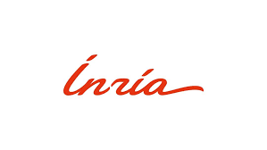

Présentation d'Inria
Nom complet : Institut National de Recherche en Informatique et en Automatique
Secteur d'activité : Recherche et innovation en sciences du numérique
Domaine : Informatique, mathématiques appliquées, intelligence artificielle, robotique, cybersécurité, simulation, calcul haute performance, etc.
Mission
Inria est un institut public de recherche français dédié aux sciences et technologies du numérique. Il conçoit et développe des logiciels, des algorithmes et des solutions innovantes en collaboration avec le monde académique et industriel.
Histoire
Créé en 1967, Inria a été fondé dans le contexte du développement de l'informatique en France, pour stimuler la recherche dans ce domaine stratégique. Depuis, l'institut est devenu un acteur clé dans l'écosystème technologique européen, notamment grâce à ses contributions en open source, intelligence artificielle et systèmes embarqués.
Organisation et centres
Inria dispose de 9 centres de recherche implantés dans différentes régions de France :
- Inria Saclay – Île-de-France
- Inria Paris
- Inria Rennes – Bretagne Atlantique
- Inria Grenoble – Rhône-Alpes
- Inria Bordeaux – Sud-Ouest
- Inria Lille – Nord Europe
- Inria Sophia Antipolis – Méditerranée
- Inria Nancy – Grand Est
- Inria Lyon (récemment ouvert)
Chiffres clés (2024)
- Environ 3 900 collaborateurs, dont de nombreux chercheurs, ingénieurs et doctorants.
- Plus de 200 équipes-projets, souvent mixtes avec des universités et écoles d'ingénieurs.
- Des dizaines de startups créées chaque année grâce à la valorisation des recherches.
- Fort partenariat avec l'Union européenne dans le cadre de projets Horizon Europe.
Mon expérience chez INRIA
En tant qu'ingénieur support à INRIA, j'ai eu l'opportunité de travailler sur divers projets et d'acquérir une expérience précieuse dans le domaine de l'informatique et du support technique.
j'ai opéré dans le CDS avec notre cheffe de service Valerie OURANIER , mon tuteur Phillipe GIOT et Romain GONÇALVES
Missions et responsabilités
Dans le cadre de mes fonctions, j'ai été amené à faire ces tâches :
- Gestion du parc informatique (GTPI)
- Assurer le support technique auprès des utilisateurs
- Participer à l'amélioration continue des services
- Gestion et résolution des incidents avec RT
- Déploiment de postes informatiques windows avec SCCM
- Déploiment de postes informatiques linux avec ansible
- Assurer la maintenance des imprimantes
- Participation au remplacement des imprimantes Toshiba par des imprimantes Kyocera